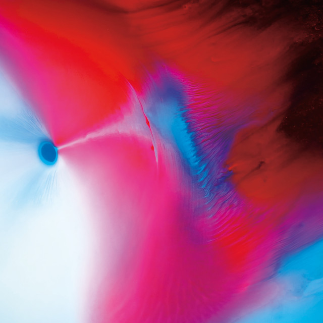

Floating Points - Cascade


 [
[ ](Error al obtener el token de acceso: 400 Client Error: Bad Request for url: https://accounts.spotify.com/api/token)
](Error al obtener el token de acceso: 400 Client Error: Bad Request for url: https://accounts.spotify.com/api/token)


Información del álbum facilitada por discogs.com:
Fecha de lanzamiento: 2024
Géneros: Electronic, Jazz, Pop
Estilos: Downtempo, Techno, House, Ambient
Pais: US
Votos: Media de 4.17 con 29 votos
Sello: Seventh Rule Recordings
Layout - Scot Seguine
Mixed By - Brett Portzer
Mixed By - Vytear
Photography By [Front] - Robert Kozek
Recorded By - Brett Portzer
Tracklist:
A1. Vocoder
A2. Key103
B1. Birth4000
B2. Del Oro
C1. Fast Forward
C2. Ocotillo
D1. Afflecks Palace
D2. Tilt Shift / Ablaze